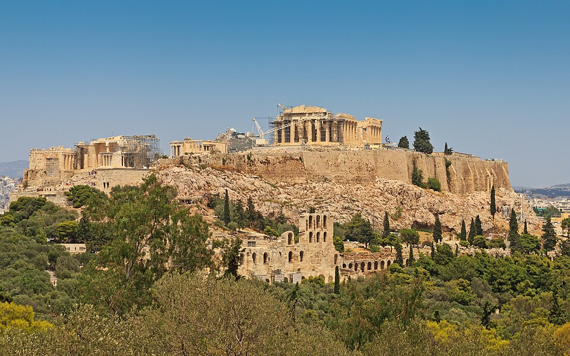
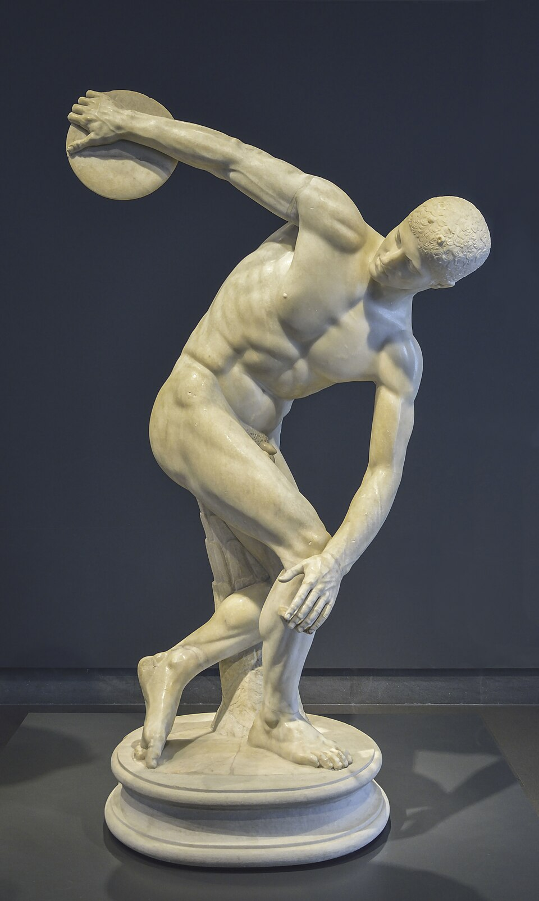
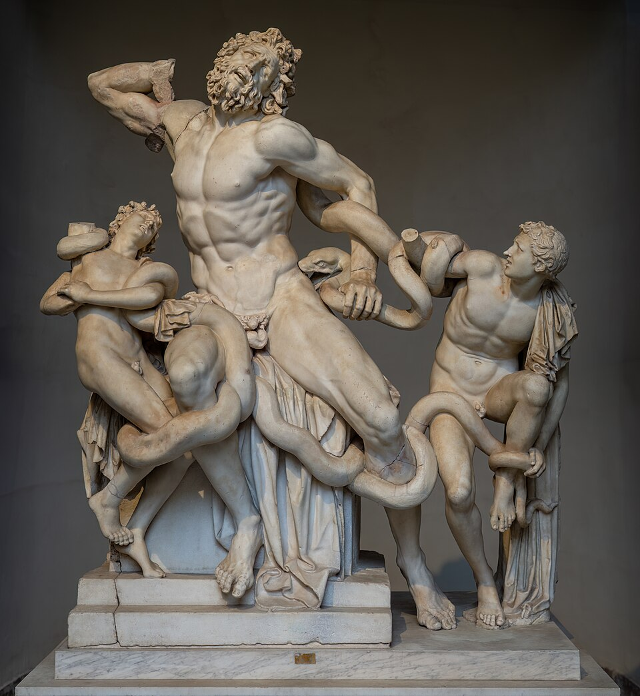
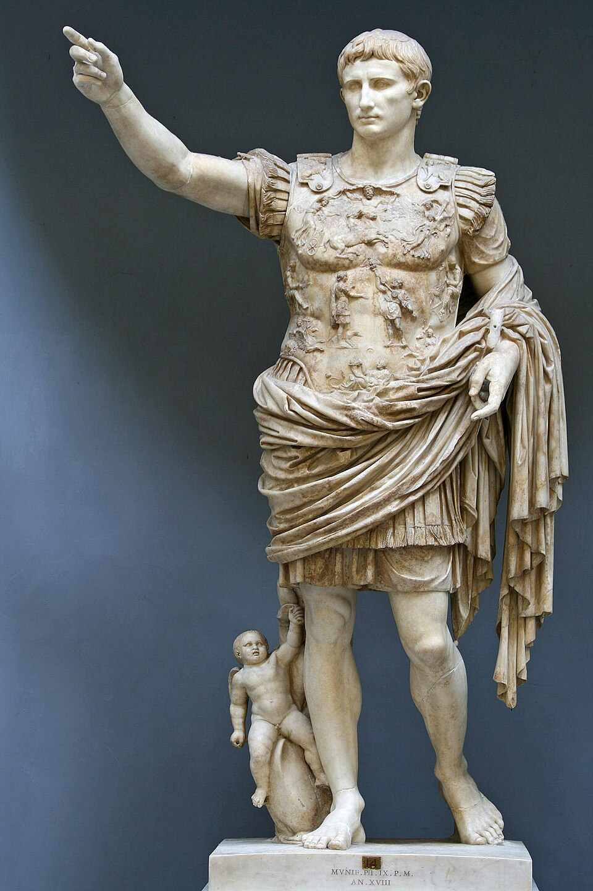
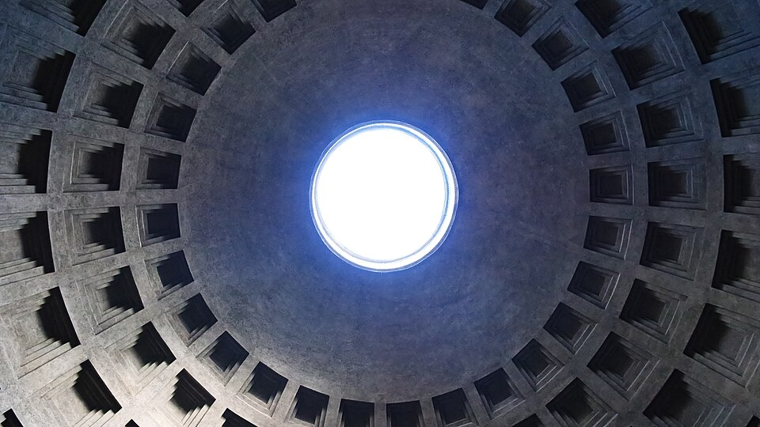

The Parthenon
| Artist | Phidias |
|---|---|
| Date | 447–432 BCE |
| Type | Architecture |
| Medium | Pentelic marble |
| Location | Acropolis, Athens |
| Region | Europe |
| Era | Ancient Greece and Rome |
| Movement | Classical art |

A Doric temple to Athena designed by the architects Ictinus and Callicrates, with a sculptural program supervised by Phidias. Subtle curves in its lines correct optical illusions and give a sense of life. Part of its frieze is in the British Museum, a long-running dispute.
Related works

c. 460–450 BCEDiscobolus (Discus Thrower)
Myron · Sculpture

1st century BCE – 1st century CELaocoön and His Sons
Unknown artist · Sculpture

early 1st century CEAugustus of Prima Porta
Unknown artist · Sculpture

c. 126 CEThe Pantheon
Unknown artist · Architecture